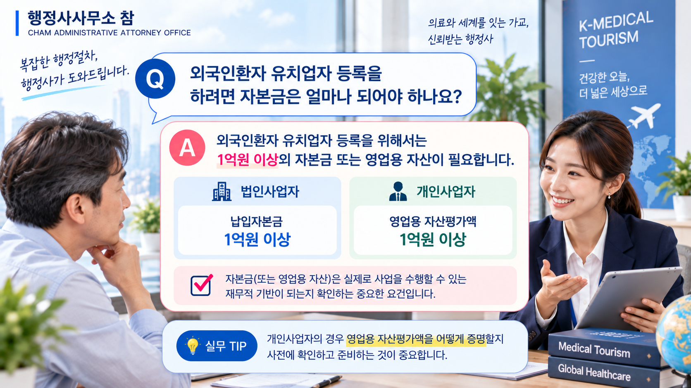
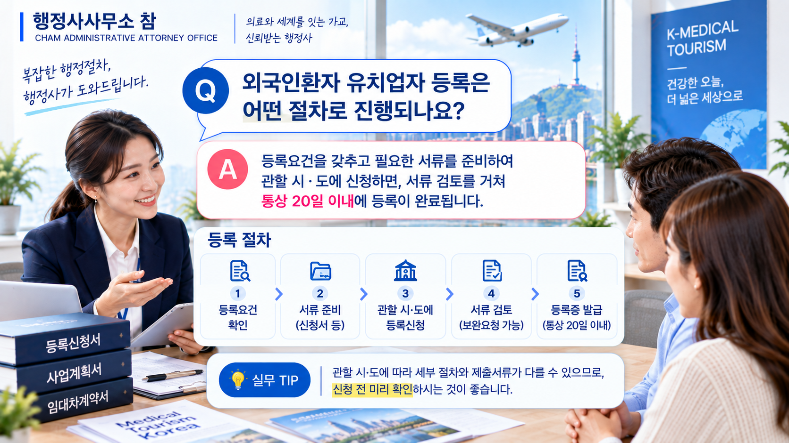

① 외국인환자 유치업자란?
외국인환자 유치업자는 외국인환자를 국내의 등록된 의료기관에 소개·알선하는 업무를 하기 위해 등록하는 사업자입니다.
병원이나 의원 등이 직접 외국인환자를 유치하기 위해 등록하는 외국인환자 유치의료기관과는 등록 주체와 준비요건이 다르므로 구분해야 합니다.
② 등록하려면 어떤 요건을 갖춰야 할까요?
외국인환자 유치업자 등록을 준비할 때는 다음 세 가지 요건을 우선 확인하는 것이 중요합니다.
| 구분 | 주요 기준 |
|---|---|
| 자본금 | 1억원 이상 |
| 보증보험 | 보험금액 1억원 이상 |
| 사무실 | 소유권 또는 사용권 확보 |
다만 자본금 기준은 법인과 개인사업자의 판단방식이 다르므로 신청인의 사업형태에 맞게 준비해야 합니다.
③ 자본금은 어떻게 준비해야 할까요?
외국인환자 유치업자는 1억원 이상의 자본금 요건을 갖추어야 합니다. 법인과 개인사업자는 이를 확인하는 기준이 다릅니다.
| 사업자 형태 | 기준 |
|---|---|
| 법인 | 납입자본금 1억원 이상 |
| 개인 | 영업용 자산평가액 1억원 이상 |
실무에서 확인할 부분
개인사업자는 단순히 계좌에 일정 금액이 있다는 사실만 보기보다 등록기준에서 요구하는 영업용 자산평가액을 어떻게 증명할 것인지를 함께 검토할 필요가 있습니다.
실제 신청 과정에서도 자산의 성격이나 증빙방법에 따라 추가 자료를 요청받을 수 있으므로 신청 전에 증빙방법을 확인하는 것이 좋습니다.

④ 보증보험은 어떻게 준비해야 할까요?
외국인환자 유치업자는 유치 과정에서 발생할 수 있는 손해에 대한 배상책임을 보장하기 위해 보험금액 1억원 이상의 보증보험에 가입해야 합니다.
등록신청 시에는 해당 요건을 확인할 수 있는 보증보험 가입증명서류를 준비합니다.
⑤ 사무실은 어떻게 준비해야 할까요?
외국인환자 유치업을 수행할 사무실에 대한 소유권 또는 사용권을 확보해야 합니다.
임차한 경우에는 임대차계약서 등 해당 장소를 사업에 사용할 수 있음을 확인할 수 있는 관련 서류를 준비하는 것이 중요합니다.
⑥ 등록신청에는 어떤 서류가 필요할까요?
외국인환자 유치업자 등록신청 시에는 신청인의 형태와 사업내용에 맞는 관련 서류를 준비해야 합니다. 주요 서류는 다음과 같습니다.
- 외국인환자 유치업자 등록신청서
- 보증보험 가입을 증명하는 서류
- 자본금 또는 영업용 자산을 증명하는 서류
- 사무실의 소유권 또는 사용권을 증명하는 서류
- 사업운영계획서
- 법인의 경우 정관 등 해당되는 추가 서류
신청인의 사업형태나 상황에 따라 확인자료가 달라질 수 있으므로 실제 신청 전에는 제출서류를 다시 확인하는 것이 좋습니다.
⑦ 사업운영계획서는 어떻게 준비할까요?
사업운영계획서는 단순히 형식을 채우는 서류라기보다 외국인환자 유치사업을 실제로 어떻게 운영할 것인지를 설명하는 자료입니다.
주요 유치대상과 환자 유치 및 관리방안, 의료기관과의 연계방안, 사업 운영체계 등 실제 사업 수행이 가능한지를 확인할 수 있도록 사업자의 상황에 맞게 작성하는 것이 중요합니다.
제출자료와의 일관성도 확인해야 합니다
사업운영계획서에 기재된 사업내용과 신청인의 사업자 현황, 조직 및 실제 운영계획 등 다른 제출자료의 내용이 서로 맞지 않으면 추가 확인이나 보완이 이루어질 수 있습니다.
따라서 사업운영계획서는 일반적인 예시를 그대로 사용하는 것보다 실제 사업모델과 등록 준비상황을 반영하여 작성하는 것이 중요합니다.
⑧ 등록은 어떤 절차로 진행될까요?
외국인환자 유치업자 등록은 다음과 같은 흐름으로 준비할 수 있습니다.
등록신청서 서식상 처리기간은 20일로 안내되어 있습니다. 다만 제출서류의 보완이나 추가 확인이 필요한 경우에는 실제 처리과정이 달라질 수 있습니다.

⑨ 등록 준비에서 특히 확인할 사항
- 유치의료기관이 아니라 유치업자 등록 대상이 맞는가
- 자본금 또는 영업용 자산평가액 1억원 이상을 충족하는가
- 보험금액 1억원 이상의 보증보험을 준비했는가
- 사무실의 소유권 또는 사용권을 확보했는가
- 신청인의 실제 사업내용에 맞게 사업운영계획서를 준비했는가
- 사업운영계획서와 다른 제출자료의 내용이 서로 일치하는가
외국인환자 유치업자 등록요건을 먼저 확인해 보세요
자가진단으로 주요 요건을 확인하거나 구체적인 상황을 알려주시면 상담을 통해 필요한 등록절차를 살펴드립니다.